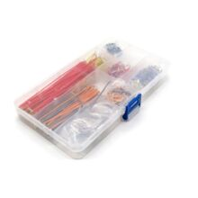

Набор цветных перемычек для макетной платы, 14 видов (560 шт.)
ПроводаКатегория
Провода
Тип
перемычки для макетной платы (breadboard jumper wires)
Количество
560 шт.
Количество типоразмеров
14
Шаг
2,54 мм
Длины
3 мм, 5,8 мм, 7,7 мм, 10,4 мм, 12,5 мм, 15,7 мм, 17,8 мм, 20,53 мм, 23,3 мм, 25,8 мм, 51,1 мм, 76,3 мм, 102 мм, 126,8 мм
Назначение
беспаечное прототипирование
Исполнение
готовые сформованные перемычки
Цвета
разноцветные
Упаковка
пластиковая коробка
Кратко
Это набор готовых цветных перемычек (jumper wires) для макетной платы с 14 длинами и 560 проводниками. Используется для беспаечного прототипирования и соединения узлов на breadboard без пайки.
Описание
Набор предназначен для быстрого монтажа и проверки схем на макетной плате. Перемычки уже сформованы и зачищены, поэтому их можно сразу вставлять в breadboard и использовать в проектах Arduino, Raspberry Pi и других прототипных схемах. Разные цвета помогают визуально различать соединения, а 14 типоразмеров закрывают как очень короткие, так и более длинные трассы внутри макетки. По описанию набора, все перемычки рассчитаны на стандартный шаг 2,54 мм и упакованы в пластиковую коробку для хранения.
Документация
id hw-2026-107